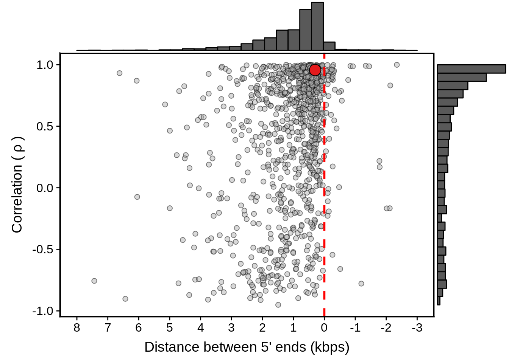
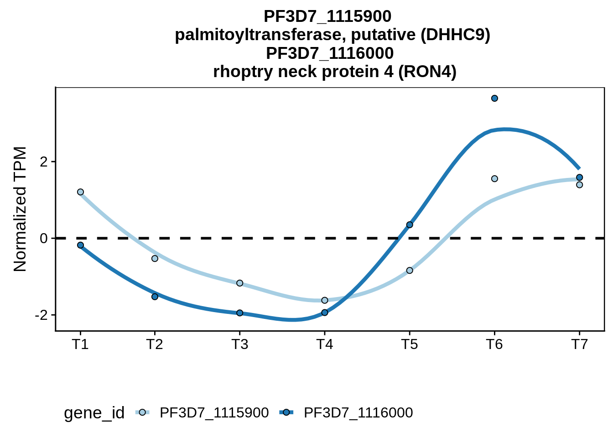

Neighboring Genes Analysis
Philipp Ross
2017-04-08
Last updated: 2019-01-11
workflowr checks: (Click a bullet for more information)-
✖ R Markdown file: uncommitted changes
The R Markdown file has unstaged changes. To know which version of the R Markdown file created these results, you’ll want to first commit it to the Git repo. If you’re still working on the analysis, you can ignore this warning. When you’re finished, you can runwflow_publishto commit the R Markdown file and build the HTML. -
✔ Environment: empty
Great job! The global environment was empty. Objects defined in the global environment can affect the analysis in your R Markdown file in unknown ways. For reproduciblity it’s best to always run the code in an empty environment.
-
✔ Seed:
set.seed(12345)The command
set.seed(12345)was run prior to running the code in the R Markdown file. Setting a seed ensures that any results that rely on randomness, e.g. subsampling or permutations, are reproducible. -
✔ Session information: recorded
Great job! Recording the operating system, R version, and package versions is critical for reproducibility.
-
Great! You are using Git for version control. Tracking code development and connecting the code version to the results is critical for reproducibility. The version displayed above was the version of the Git repository at the time these results were generated.✔ Repository version: dd9d56a
Note that you need to be careful to ensure that all relevant files for the analysis have been committed to Git prior to generating the results (you can usewflow_publishorwflow_git_commit). workflowr only checks the R Markdown file, but you know if there are other scripts or data files that it depends on. Below is the status of the Git repository when the results were generated:
Note that any generated files, e.g. HTML, png, CSS, etc., are not included in this status report because it is ok for generated content to have uncommitted changes.Ignored files: Ignored: .Rhistory Ignored: .Rproj.user/ Ignored: analysis/.DS_Store Ignored: analysis/.httr-oauth Ignored: code/.DS_Store Ignored: code/differential_expression/ Ignored: code/differential_phase/ Ignored: data/ Ignored: docs/.DS_Store Ignored: docs/figure/.DS_Store Ignored: docs/figure/neighboring_genes.Rmd/.DS_Store Ignored: output/compare/ Ignored: output/ctss_clustering/ Ignored: output/differential_detection/ Ignored: output/differential_expression/ Ignored: output/differential_phase/ Ignored: output/extensive_transcription/ Ignored: output/final_utrs/ Ignored: output/gcbias/ Ignored: output/homopolymer_analysis/ Ignored: output/neighboring_genes/ Ignored: output/promoter_architecture/ Ignored: output/tfbs_analysis/ Ignored: output/transcript_abundance/ Untracked files: Untracked: _workflowr.yml Untracked: docs/figure/tfbs_analysis.Rmd/ Untracked: figures/ Unstaged changes: Modified: README.md Modified: analysis/_site.yml Modified: analysis/about.Rmd Modified: analysis/analyze_neighboring_genes.Rmd Modified: analysis/array_correlations.Rmd Modified: analysis/calculate_transcript_abundance.Rmd Deleted: analysis/chunks.R Modified: analysis/comparing_utrs.Rmd Modified: analysis/ctss_clustering.Rmd Modified: analysis/dynamic_tss.Rmd Modified: analysis/extensive_transcription.Rmd Modified: analysis/final_utrs.Rmd Modified: analysis/gcbias.Rmd Modified: analysis/index.Rmd Modified: analysis/license.Rmd Modified: analysis/process_neighboring_genes.Rmd Modified: analysis/promoter_architecture.Rmd Modified: analysis/strain_differential_detection.Rmd Modified: analysis/strain_differential_expression.Rmd Modified: analysis/strain_differential_phase.Rmd Modified: analysis/tfbs_analysis.Rmd Modified: code/differential_detection/detect_transcripts.R Modified: code/figures.R Deleted: docs/Rplots.pdf
Expand here to see past versions:
| File | Version | Author | Date | Message |
|---|---|---|---|---|
| Rmd | fafe120 | Philipp Ross | 2018-10-01 | finished dynamic tsss |
| Rmd | f0b9974 | Philipp Ross | 2018-09-23 | update to neighboring gene analysis |
| html | f0b9974 | Philipp Ross | 2018-09-23 | update to neighboring gene analysis |
| Rmd | f59e2e3 | Philipp Ross | 2018-09-22 | hellooooo |
| html | f59e2e3 | Philipp Ross | 2018-09-22 | hellooooo |
Overview
What is the relationship between the distances between neighboring genes and their co-expression? Can we identify putative bidirectional promoters this way? Are convergent neighboring genes that overlap more likely to be expressed at different time points?
Analysis
First let’s read in the data we generated during processing the data:
# abundance estimates
x3d7_abund <- readRDS("../output/neighboring_genes/gene_reduced_3d7_abund.rds")
xhb3_abund <- readRDS("../output/neighboring_genes/gene_reduced_hb3_abund.rds")
xit_abund <- readRDS("../output/neighboring_genes/gene_reduced_it_abund.rds")
# Without UTR predictions
convergent <- readr::read_tsv("../output/neighboring_genes/non_utr_convergent.tsv",col_names=TRUE)
divergent <- readr::read_tsv("../output/neighboring_genes/non_utr_divergent.tsv",col_names=TRUE)
tandem <- readr::read_tsv("../output/neighboring_genes/non_utr_tandem.tsv",col_names=TRUE)
all_neighboring <- dplyr::bind_rows(convergent,divergent,tandem)
# 3D7 UTR predictions
x3d7_convergent <- readr::read_tsv("../output/neighboring_genes/3d7_convergent.tsv",col_names=TRUE)
x3d7_divergent <- readr::read_tsv("../output/neighboring_genes/3d7_divergent.tsv",col_names=TRUE)
# HB3 UTR predictions
xhb3_convergent <- readr::read_tsv("../output/neighboring_genes/hb3_convergent.tsv",col_names=TRUE)
xhb3_divergent <- readr::read_tsv("../output/neighboring_genes/hb3_divergent.tsv",col_names=TRUE)
# IT UTR predictions
xit_convergent <- readr::read_tsv("../output/neighboring_genes/it_convergent.tsv",col_names=TRUE)
xit_divergent <- readr::read_tsv("../output/neighboring_genes/it_divergent.tsv",col_names=TRUE)Before and after UTR predictions
Let’s make some plots of the before and after picture of distance between genes and their correlation to one another. Before we do this we need to actually generate the data we care about. We need to calculate the neighboring genes and the distances beween those genes. Then we can import that data, calculate the correlations between those neighboring genes, and create a gene-by-gene table of neighboring genes, the distances between them, their orientations, and the correlations between their expression patterns.
Should we remove genes for which we don’t have UTR predictions?
Correlation by distance plots
We also want to filter out genes for which we have no 5’ or 3’ UTR predictions
utrs_3d7 <- tibble::as_tibble(rtracklayer::import.gff3("../output/final_utrs/final_utrs_3d7.gff"))
utrs_3d7$Parent <- unlist(utrs_3d7$Parent)
utrs_hb3 <- tibble::as_tibble(rtracklayer::import.gff3("../output/final_utrs/final_utrs_hb3.gff"))
utrs_hb3$Parent <- unlist(utrs_hb3$Parent)
utrs_it <- tibble::as_tibble(rtracklayer::import.gff3("../output/final_utrs/final_utrs_it.gff"))
utrs_it$Parent <- unlist(utrs_it$Parent)And genes for which we actually detect a confident level of transcription:
# filter out genes with a TPM below the threshold
# and that are not protein coding genes
pcg <- tibble::as_tibble(rtracklayer::import.gff3("../data/annotations/PF3D7_codinggenes_for_bedtools.gff"))$ID
get_filtered_ids <- function(abund,tpm_threshold) {
fabund <- abund %>%
dplyr::group_by(gene_id) %>%
dplyr::summarise(f=sum(TPM>=tpm_threshold)) %>%
dplyr::ungroup() %>%
dplyr::filter(f>0 & gene_id %in% pcg)
return(fabund$gene_id)
}
fx3d7 <- get_filtered_ids(x3d7_abund,5)
fxhb3 <- get_filtered_ids(xhb3_abund,5)
fxit <- get_filtered_ids(xit_abund,5)First we should look at some randomly sampled neighboring genes to get an idea of what the average level of correlatino between genes is:
set.seed(33)
random_cor <- sapply(seq(1,1000), function(x) {all_neighboring %>%
dplyr::filter(left_gene %in% utrs_3d7[utrs_3d7$type == "5UTR",]$Parent &
left_gene %in% utrs_3d7[utrs_3d7$type == "3UTR",]$Parent &
right_gene %in% utrs_3d7[utrs_3d7$type == "5UTR",]$Parent &
right_gene %in% utrs_3d7[utrs_3d7$type == "3UTR",]$Parent &
left_gene %in% fx3d7 & right_gene %in% fx3d7) %>%
dplyr::sample_n(1000,replace=F) %$%
mean(cor)})
random_neighboring <- tibble::tibble(left_gene=NA,right_gene=NA,dist=NA,cor=random_cor,orientation="random")
filtered_divergent <- divergent %>%
dplyr::filter(left_gene %in% utrs_3d7[utrs_3d7$type == "5UTR",]$Parent &
right_gene %in% utrs_3d7[utrs_3d7$type == "5UTR",]$Parent &
left_gene %in% fx3d7 & right_gene %in% fx3d7) %>%
dplyr::mutate(orientation="divergent")
filtered_convergent <- convergent %>%
dplyr::filter(left_gene %in% utrs_3d7[utrs_3d7$type == "3UTR",]$Parent &
right_gene %in% utrs_3d7[utrs_3d7$type == "3UTR",]$Parent &
left_gene %in% fx3d7 & right_gene %in% fx3d7) %>%
dplyr::mutate(orientation="convergent")
filtered_neighboring <- dplyr::bind_rows(filtered_convergent,filtered_divergent,random_neighboring) %>%
dplyr::mutate(orientation=factor(orientation,levels=c("divergent","convergent","random")))We can visualize this either as a density plot or boxplot:
g <- filtered_neighboring %>% ggplot(aes(x=cor,group=orientation,color=orientation)) +
geom_line(stat="density",size=1.5) +
scale_color_brewer(palette="Accent") +
ylab("Density") +
xlab(expression(rho)) +
theme(legend.position="bottom")
print(g)ggsave(plot=g,filename="../output/neighboring_genes/neighboring_cor_density.svg",heigh=3,width=4)
g <- filtered_neighboring %>% ggplot(aes(x=orientation,y=cor,fill=orientation)) +
geom_boxplot(size=1) +
scale_fill_brewer(palette="Accent") +
ylab(expression("Correlation ("~rho~")")) +
xlab("") +
theme(axis.text.x = element_text(angle=60, hjust=1))
print(g)Are the convergent and divergent correlations significantly different than random pairs?
Wilcoxon rank sum test with continuity correction
data: filtered_divergent$cor and random_neighboring$cor
W = 759400, p-value < 2.2e-16
alternative hypothesis: true location shift is not equal to 0
Wilcoxon rank sum test with continuity correction
data: filtered_convergent$cor and random_neighboring$cor
W = 490430, p-value = 0.00376
alternative hypothesis: true location shift is not equal to 0Now let’s filter the rest of the neighboring genes for the full-transcript distances:
fx3d7_divergent <- x3d7_divergent %>%
dplyr::filter(left_gene %in% utrs_3d7[utrs_3d7$type == "5UTR",]$Parent &
right_gene %in% utrs_3d7[utrs_3d7$type == "5UTR",]$Parent &
left_gene %in% fx3d7 & right_gene %in% fx3d7) %>%
dplyr::mutate(orientation="divergent")
fx3d7_convergent <- x3d7_convergent %>%
dplyr::filter(left_gene %in% utrs_3d7[utrs_3d7$type == "3UTR",]$Parent &
right_gene %in% utrs_3d7[utrs_3d7$type == "3UTR",]$Parent &
left_gene %in% fx3d7 & right_gene %in% fx3d7) %>%
dplyr::mutate(orientation="convergent")fxhb3_divergent <- xhb3_divergent %>%
dplyr::filter(left_gene %in% utrs_hb3[utrs_hb3$type == "5UTR",]$Parent &
right_gene %in% utrs_hb3[utrs_hb3$type == "5UTR",]$Parent &
left_gene %in% fxhb3 & right_gene %in% fxhb3) %>%
dplyr::mutate(orientation="divergent")
fxhb3_convergent <- xhb3_convergent %>%
dplyr::filter(left_gene %in% utrs_hb3[utrs_hb3$type == "3UTR",]$Parent &
right_gene %in% utrs_hb3[utrs_hb3$type == "3UTR",]$Parent &
left_gene %in% fxhb3 & right_gene %in% fxhb3) %>%
dplyr::mutate(orientation="convergent")fxit_divergent <- xit_divergent %>%
dplyr::filter(left_gene %in% utrs_it[utrs_it$type == "5UTR",]$Parent &
right_gene %in% utrs_it[utrs_it$type == "5UTR",]$Parent &
left_gene %in% fxit & right_gene %in% fxit) %>%
dplyr::mutate(orientation="divergent")
fxit_convergent <- xit_convergent %>%
dplyr::filter(left_gene %in% utrs_it[utrs_it$type == "3UTR",]$Parent &
right_gene %in% utrs_it[utrs_it$type == "3UTR",]$Parent &
left_gene %in% fxit & right_gene %in% fxit) %>%
dplyr::mutate(orientation="convergent")First we can make 3D7 plots. We can look at the before and after shots:
# write summary to a file
sink("../output/neighboring_genes/non_utr_divergent_summary.txt")
summary(filtered_divergent) left_gene right_gene dist cor
Length:1119 Length:1119 Min. : 19 Min. :-0.947766
Class :character Class :character 1st Qu.: 1192 1st Qu.:-0.005024
Mode :character Mode :character Median : 1946 Median : 0.493932
Mean : 2286 Mean : 0.351075
3rd Qu.: 3014 3rd Qu.: 0.784766
Max. :12047 Max. : 0.999899
orientation
Length:1119
Class :character
Mode :character
sink(NULL)
# plot results
g <- filtered_divergent %>%
ggplot(aes(x=dist,y=cor)) +
geom_point(fill="grey70",color="black",pch=21,size=2,alpha=0.5) +
panel_border(colour="black",size=1) +
ylab(expression("Correlation ("~rho~")")) +
xlab("Distance between 5' Ends (kbps)") +
scale_x_reverse(limits=c(9000,-2000),
breaks=c(9000,8000,7000,6000,5000,4000,3000,2000,1000,0,-1000,-2000),
labels=c("9","8","7","6","5","4","3","2","1","0","-1","-2")) +
geom_vline(xintercept=0,linetype=2,col="red",size=1) +
geom_point(data=subset(divergent,left_gene=="PF3D7_1011900"&right_gene=="PF3D7_1012000"),fill="#377EB8",color="black",pch=21,size=5)
g <- ggExtra::ggMarginal(g, type = "histogram")
print(g)Expand here to see past versions of headhead-1.png:
| Version | Author | Date |
|---|---|---|
| f0b9974 | Philipp Ross | 2018-09-23 |
| f59e2e3 | Philipp Ross | 2018-09-22 |
# write summary to a file
sink("../output/neighboring_genes/3d7_divergent_summary.txt")
summary(fx3d7_divergent) left_gene right_gene dist cor
Length:1119 Length:1119 Min. :-2869 Min. :-0.947766
Class :character Class :character 1st Qu.: 229 1st Qu.:-0.005024
Mode :character Mode :character Median : 548 Median : 0.493932
Mean : 857 Mean : 0.351075
3rd Qu.: 1283 3rd Qu.: 0.784766
Max. :10276 Max. : 0.999899
orientation
Length:1119
Class :character
Mode :character
sink(NULL)
# plot results
g <- fx3d7_divergent %>%
ggplot(aes(x=dist,y=cor)) +
geom_point(fill="grey70",color="black",pch=21,size=2,alpha=0.5) +
panel_border(colour="black",size=1) +
ylab(expression("Correlation ("~rho~")")) +
xlab("Distance between 5' Ends (kbps)") +
scale_x_reverse(limits=c(9000,-2000),
breaks=c(9000,8000,7000,6000,5000,4000,3000,2000,1000,0,-1000,-2000),
labels=c("9","8","7","6","5","4","3","2","1","0","-1","-2")) +
geom_vline(xintercept=0,linetype=2,col="red",size=1) +
geom_point(data=subset(x3d7_divergent,left_gene=="PF3D7_1011900"&right_gene=="PF3D7_1012000"),fill="#377EB8",color="black",pch=21,size=5)
g <- ggExtra::ggMarginal(g, type = "histogram")
print(g)Expand here to see past versions of 3d7headhead-1.png:
| Version | Author | Date |
|---|---|---|
| f0b9974 | Philipp Ross | 2018-09-23 |
| f59e2e3 | Philipp Ross | 2018-09-22 |
# write summary to file
sink("../output/neighboring_genes/non_utr_convergent_summary.txt")
summary(filtered_convergent) left_gene right_gene dist cor
Length:1059 Length:1059 Min. : -99.0 Min. :-0.94701
Class :character Class :character 1st Qu.: 446.0 1st Qu.:-0.35060
Mode :character Mode :character Median : 657.0 Median : 0.11516
Mean : 760.0 Mean : 0.09809
3rd Qu.: 957.5 3rd Qu.: 0.58076
Max. :7692.0 Max. : 0.99123
orientation
Length:1059
Class :character
Mode :character
sink(NULL)
# plot results
g <- filtered_convergent %>%
ggplot(aes(x=dist,y=cor)) +
geom_point(fill="grey70",color="black",pch=21,size=2,alpha=0.5) +
panel_border(colour="black",size=1) +
ylab(expression("Correlation ("~rho~")")) +
xlab("Distance between 3' Ends (kbps)") +
scale_x_reverse(limits=c(4000,-4000),
breaks=c(4000,3000,2000,1000,0,-1000,-2000,-3000,-4000),
labels=c("4","3","2","1","0","-1","-2","-3","-4")) +
geom_vline(xintercept=0,linetype=2,col="red",size=1) +
geom_point(data=subset(convergent,left_gene=="PF3D7_1102700"&right_gene=="PF3D7_1102800"),fill="#377EB8",color="black",pch=21,size=5)
g <- ggExtra::ggMarginal(g, type = "histogram")
print(g)
Expand here to see past versions of tailtail-1.png:
| Version | Author | Date |
|---|---|---|
| f0b9974 | Philipp Ross | 2018-09-23 |
| f59e2e3 | Philipp Ross | 2018-09-22 |
# write summary
sink("../output/neighboring_genes/3d7_convergent_summary.txt")
summary(fx3d7_convergent) left_gene right_gene dist
Length:1059 Length:1059 Min. :-3135.0
Class :character Class :character 1st Qu.: -376.0
Mode :character Mode :character Median : -124.0
Mean : -125.1
3rd Qu.: 69.5
Max. : 7139.0
cor orientation
Min. :-0.94701 Length:1059
1st Qu.:-0.35060 Class :character
Median : 0.11516 Mode :character
Mean : 0.09809
3rd Qu.: 0.58076
Max. : 0.99123 sink(NULL)
# plot results
g <- fx3d7_convergent %>%
ggplot(aes(x=dist,y=cor)) +
geom_point(fill="grey70",color="black",pch=21,size=2,alpha=0.5) +
panel_border(colour="black",size=1) +
ylab(expression("Correlation ("~rho~")")) +
xlab("Distance between 3' Ends (kbps)") +
scale_x_reverse(limits=c(4000,-4000),
breaks=c(4000,3000,2000,1000,0,-1000,-2000,-3000,-4000),
labels=c("4","3","2","1","0","-1","-2","-3","-4")) +
geom_vline(xintercept=0,linetype=2,col="red",size=1) +
geom_point(data=subset(x3d7_convergent,left_gene=="PF3D7_1102700"&right_gene=="PF3D7_1102800"),fill="#377EB8",color="black",pch=21,size=5)
g <- ggExtra::ggMarginal(g, type = "histogram")
print(g)
Expand here to see past versions of 3d7tailtail-1.png:
| Version | Author | Date |
|---|---|---|
| f0b9974 | Philipp Ross | 2018-09-23 |
| f59e2e3 | Philipp Ross | 2018-09-22 |
Then we can make the HB3 plots:
# write summary to a file
sink("../output/neighboring_genes/hb3_divergent_summary.txt")
summary(fxhb3_divergent) left_gene right_gene dist cor
Length:1005 Length:1005 Min. :-2344 Min. :-0.9510
Class :character Class :character 1st Qu.: 330 1st Qu.: 0.0330
Mode :character Mode :character Median : 713 Median : 0.6427
Mean : 1051 Mean : 0.4212
3rd Qu.: 1520 3rd Qu.: 0.8935
Max. : 7437 Max. : 0.9992
orientation
Length:1005
Class :character
Mode :character
sink(NULL)
# plot results
g <- fxhb3_divergent %>%
ggplot(aes(x=dist,y=cor)) +
geom_point(fill="grey70",color="black",pch=21,size=2,alpha=0.5) +
panel_border(colour="black",size=1) +
ylab(expression("Correlation ("~rho~")")) +
xlab("Distance between 5' ends (kbps)") +
scale_x_reverse(limits=c(8000,-3000),
breaks=c(8000,7000,6000,5000,4000,3000,2000,1000,0,-1000,-2000,-3000),
labels=c("8","7","6","5","4","3","2","1","0","-1","-2","-3")) +
geom_vline(xintercept=0,linetype=2,col="red",size=1) +
geom_point(data=subset(x3d7_divergent,left_gene=="PF3D7_1011900"&right_gene=="PF3D7_1012000"),fill="#E41A1C",color="black",pch=21,size=5)
g <- ggExtra::ggMarginal(g, type = "histogram")
print(g)
Expand here to see past versions of hb3headhead-1.png:
| Version | Author | Date |
|---|---|---|
| f0b9974 | Philipp Ross | 2018-09-23 |
| f59e2e3 | Philipp Ross | 2018-09-22 |
# write summary to a file
sink("../output/neighboring_genes/hb3_convergent_summart.txt")
summary(fxhb3_convergent) left_gene right_gene dist
Length:814 Length:814 Min. :-2491.00
Class :character Class :character 1st Qu.: -279.75
Mode :character Mode :character Median : 23.00
Mean : -31.44
3rd Qu.: 165.25
Max. : 7494.00
cor orientation
Min. :-0.9564 Length:814
1st Qu.:-0.3743 Class :character
Median : 0.2185 Mode :character
Mean : 0.1552
3rd Qu.: 0.6882
Max. : 0.9963 sink(NULL)
# plot results
g <- fxhb3_convergent %>%
ggplot(aes(x=dist,y=cor)) +
geom_point(fill="grey70",color="black",pch=21,size=2,alpha=0.5) +
panel_border(colour="black",size=1) +
ylab(expression("Correlation ("~rho~")")) +
xlab("Distance between 3' ends (kbps)") +
scale_x_reverse(limits=c(8000,-3000),
breaks=c(8000,7000,6000,5000,4000,3000,2000,1000,0,-1000,-2000,-3000),
labels=c("8","7","6","5","4","3","2","1","0","-1","-2","-3")) +
geom_vline(xintercept=0,linetype=2,col="red",size=1) +
geom_point(data=subset(x3d7_convergent,left_gene=="PF3D7_1102700"&right_gene=="PF3D7_1102800"),fill="#E41A1C",color="black",pch=21,size=5)
g <- ggExtra::ggMarginal(g, type = "histogram")
print(g)
Expand here to see past versions of hb3tailtail-1.png:
| Version | Author | Date |
|---|---|---|
| f0b9974 | Philipp Ross | 2018-09-23 |
| f59e2e3 | Philipp Ross | 2018-09-22 |
And finally for IT:
# write summary to a file
sink("../output/neighboring_genes/it_divergent_summary.txt")
summary(fxit_divergent) left_gene right_gene dist cor
Length:942 Length:942 Min. :-4477.0 Min. :-0.9243
Class :character Class :character 1st Qu.: 355.2 1st Qu.: 0.1205
Mode :character Mode :character Median : 762.5 Median : 0.6316
Mean : 1141.9 Mean : 0.4459
3rd Qu.: 1699.8 3rd Qu.: 0.8848
Max. : 7426.0 Max. : 0.9999
orientation
Length:942
Class :character
Mode :character
sink(NULL)
# plot results
g <- fxit_divergent %>%
ggplot(aes(x=dist,y=cor)) +
geom_point(fill="grey70",color="black",pch=21,size=2,alpha=0.5) +
panel_border(colour="black",size=1) +
ylab(expression("Correlation ("~rho~")")) +
xlab("Distance between 5' ends (kbps)") +
scale_x_reverse(limits=c(8000,-5000),
breaks=c(8000,7000,6000,5000,4000,3000,2000,1000,0,-1000,-2000,-3000,-4000,-5000),
labels=c("8","7","6","5","4","3","2","1","0","-1","-2","-3","-4","-5")) +
geom_vline(xintercept=0,linetype=2,col="red",size=1) +
geom_point(data=subset(x3d7_divergent,left_gene=="PF3D7_1011900"&right_gene=="PF3D7_1012000"),fill="#4DAF4A",color="black",pch=21,size=5)
g <- ggExtra::ggMarginal(g, type = "histogram")
print(g)
Expand here to see past versions of itheadhead-1.png:
| Version | Author | Date |
|---|---|---|
| f0b9974 | Philipp Ross | 2018-09-23 |
| f59e2e3 | Philipp Ross | 2018-09-22 |
# write summary to a file
sink("../output/neighboring_genes/it_convergent_summary.txt")
summary(fxit_convergent) left_gene right_gene dist cor
Length:779 Length:779 Min. :-2118.0 Min. :-0.9810
Class :character Class :character 1st Qu.: -128.0 1st Qu.:-0.3282
Mode :character Mode :character Median : 70.0 Median : 0.1520
Mean : 104.9 Mean : 0.1503
3rd Qu.: 253.5 3rd Qu.: 0.6782
Max. : 4603.0 Max. : 0.9951
orientation
Length:779
Class :character
Mode :character
sink(NULL)
# plot results
g <- fxit_convergent %>%
ggplot(aes(x=dist,y=cor)) +
geom_point(fill="grey70",color="black",pch=21,size=2,alpha=0.5) +
panel_border(colour="black",size=1) +
ylab(expression("Correlation ("~rho~")")) +
xlab("Distance between 3' ends (bps)") +
scale_x_reverse(limits=c(5000,-3000),
breaks=c(5000,4000,3000,2000,1000,0,-1000,-2000,-3000),
labels=c("5","4","3","2","1","0","-1","-2","-3")) +
geom_vline(xintercept=0,linetype=2,col="red",size=1) +
geom_point(data=subset(x3d7_convergent,left_gene=="PF3D7_1102700"&right_gene=="PF3D7_1102800"),fill="#4DAF4A",color="black",pch=21,size=5)
g <- ggExtra::ggMarginal(g, type = "histogram")
print(g)Individual profile plots
We need to scale the data for appropriate plotting:
fx3d7_abund <- x3d7_abund %>%
dplyr::filter(gene_id %in% fx3d7) %>%
dplyr::select(gene_id,tp,TPM) %>%
dplyr::group_by(gene_id) %>%
dplyr::summarise(m=mean(TPM)) %>%
dplyr::inner_join(x3d7_abund) %>%
dplyr::mutate(norm_tpm=(((TPM/m)-mean(TPM/m))/sd(TPM/m))) %>%
dplyr::select(gene_id,tp,norm_tpm) %>%
dplyr::ungroup() %>%
tidyr::spread(tp,norm_tpm)
sx3d7_abund <- fx3d7_abund %>%
dplyr::rename(`8`=`2`,
`16`=`3`,
`24`=`4`,
`32`=`5`,
`40`=`6`,
`48`=`7`) %>%
tidyr::gather(tp,norm_tpm,-gene_id) %>%
dplyr::mutate(tp=as.numeric(tp))plot_paired_profiles <- function(df, gid1, gid2) {
df %>%
dplyr::filter(gene_id == gid1 | gene_id == gid2) %>%
ggplot(aes(x = tp, y = norm_tpm, color = gene_id,group=gene_id)) +
ggtitle(paste(gid1,"\n ",gene_names[gene_names$gene_id==gid1,]$gene_name,"\n",
gid2,"\n ",gene_names[gene_names$gene_id==gid2,]$gene_name)) +
stat_smooth(se = F, size = 1.5) +
geom_point(aes(fill=gene_id),color="black",pch=21,size=2) +
scale_x_continuous(breaks = c(1,8,16,24,32,40,48), labels = c("T1", "T2", "T3" ,"T4", "T5", "T6", "T7")) +
panel_border(colour="black",remove=F) +
scale_color_brewer(palette="Paired") +
scale_fill_brewer(palette="Paired") +
ylab("Normalized TPM") +
xlab("") +
theme(legend.position="bottom") +
geom_hline(yintercept=0,linetype=2,color="black",size=1)
}Convergent example
#plot_paired_profiles(sx3d7_abund,"PF3D7_1431300","PF3D7_1431400")
#plot_paired_profiles(sx3d7_abund,"PF3D7_0214900","PF3D7_0215000")
g <- plot_paired_profiles(sx3d7_abund,"PF3D7_1115900","PF3D7_1116000")
ggsave(plot=g,filename="../output/neighboring_genes/convergent_pair.svg",width=4,height=4)
print(g)
Expand here to see past versions of unnamed-chunk-15-1.png:
| Version | Author | Date |
|---|---|---|
| f59e2e3 | Philipp Ross | 2018-09-22 |

Bidirectional promoters
What if we split up the divergent neighboring genes by the distance separating them and plot their correlations individually. Do we see anything interesting?
tmp <- fx3d7_divergent
tmp$group <- dplyr::case_when(
tmp$dist <= 0 ~ "< 0",
tmp$dist <= 500 & tmp$dist > 0 ~ "0-500",
tmp$dist <= 1000 & tmp$dist > 500 ~ "500-1000",
tmp$dist <= 1500 & tmp$dist > 1000 ~ "1000-1500",
tmp$dist <= 2000 & tmp$dist > 1500 ~ "1500-2000",
tmp$dist > 2000 ~ "> 2000"
)
tmp$group <- factor(tmp$group, levels=c("< 0","0-500","500-1000","1000-1500","1500-2000","> 2000"))
tmp %>% group_by(group) %>% summarise(m=mean(cor))# A tibble: 6 x 2
group m
<fct> <dbl>
1 < 0 0.568
2 0-500 0.494
3 500-1000 0.337
4 1000-1500 0.0937
5 1500-2000 0.176
6 > 2000 0.123 left_gene right_gene dist cor
Length:1119 Length:1119 Min. :-2869 Min. :-0.947766
Class :character Class :character 1st Qu.: 229 1st Qu.:-0.005024
Mode :character Mode :character Median : 548 Median : 0.493932
Mean : 857 Mean : 0.351075
3rd Qu.: 1283 3rd Qu.: 0.784766
Max. :10276 Max. : 0.999899
orientation group
Length:1119 < 0 :115
Class :character 0-500 :417
Mode :character 500-1000 :225
1000-1500:137
1500-2000: 97
> 2000 :128 g <- tmp %>% ggplot(aes(x=group,y=cor,group=group)) +
geom_boxplot(fill="#7FC97F",size=1) +
geom_hline(yintercept=mean(random_cor),linetype=2,col="red",size=1) +
theme(axis.text.x = element_text(angle=60, hjust=1)) +
xlab("") +
ylab(expression("Correlation ("~rho~")"))
ggsave(plot=g,filename="../output/neighboring_genes/divergent_groups.pdf",height=3,width=4)
print(g)
Expand here to see past versions of unnamed-chunk-18-1.png:
| Version | Author | Date |
|---|---|---|
| f0b9974 | Philipp Ross | 2018-09-23 |
| f59e2e3 | Philipp Ross | 2018-09-22 |
Now to make a table of predicted bidirectional promoters:
bidirectional <- fx3d7_divergent %>%
dplyr::filter(dist<=1000,cor>=0.5) %>%
dplyr::select(-orientation) %>%
dplyr::inner_join(tibble::as_tibble(as.data.frame(org.Pf.plasmoGENENAME)),by=c("left_gene"="gene_id")) %>%
dplyr::rename(left_gene_name=gene_name) %>%
dplyr::inner_join(tibble::as_tibble(as.data.frame(org.Pf.plasmoGENENAME)),by=c("right_gene"="gene_id")) %>%
dplyr::rename(right_gene_name=gene_name) %>%
dplyr::select(left_gene,left_gene_name,right_gene,right_gene_name,dist,cor)
readr::write_tsv(x=bidirectional,path="../output/neighboring_genes/bidirectional_promoters.tsv")Transcriptional interference
tmp <- fx3d7_convergent
tmp$group <- dplyr::case_when(
tmp$dist < -1000 ~ "< -1000",
tmp$dist >= -1000 & tmp$dist < -500 ~ "-1000--500",
tmp$dist >= -500 & tmp$dist < 0 ~ "-500-0",
tmp$dist >= 0 & tmp$dist < 500 ~ "0-500",
tmp$dist >= 500 & tmp$dist < 1000 ~ "500-1000",
tmp$dist > 1000 ~ "> 1000"
)
tmp$group <- factor(tmp$group, levels=c("< -1000","-1000--500","-500-0","0-500","500-1000","> 1000"))
tmp %>% group_by(group) %>% summarise(m=mean(cor))# A tibble: 6 x 2
group m
<fct> <dbl>
1 < -1000 0.0394
2 -1000--500 0.0991
3 -500-0 0.126
4 0-500 0.0694
5 500-1000 0.160
6 > 1000 0.0189 left_gene right_gene dist
Length:1059 Length:1059 Min. :-3135.0
Class :character Class :character 1st Qu.: -376.0
Mode :character Mode :character Median : -124.0
Mean : -125.1
3rd Qu.: 69.5
Max. : 7139.0
cor orientation group
Min. :-0.94701 Length:1059 < -1000 : 37
1st Qu.:-0.35060 Class :character -1000--500:128
Median : 0.11516 Mode :character -500-0 :433
Mean : 0.09809 0-500 :390
3rd Qu.: 0.58076 500-1000 : 49
Max. : 0.99123 > 1000 : 22 g <- tmp %>% ggplot(aes(x=group,y=cor,group=group)) +
geom_boxplot(fill="#BEAED4",size=1) +
geom_hline(yintercept=mean(random_cor),linetype=2,col="red",size=1) +
theme(axis.text.x = element_text(angle=60, hjust=1)) +
xlab("") +
ylab(expression("Correlation ("~rho~")"))
ggsave(plot=g,filename="../output/neighboring_genes/convergent_groups.pdf",height=3,width=4)
print(g)Session information
R version 3.5.1 (2018-07-02)
Platform: x86_64-pc-linux-gnu (64-bit)
Running under: Gentoo/Linux
Matrix products: default
BLAS: /usr/local/lib64/R/lib/libRblas.so
LAPACK: /usr/local/lib64/R/lib/libRlapack.so
locale:
[1] LC_CTYPE=en_US.UTF-8 LC_NUMERIC=C
[3] LC_TIME=en_US.UTF-8 LC_COLLATE=en_US.UTF-8
[5] LC_MONETARY=en_US.UTF-8 LC_MESSAGES=en_US.UTF-8
[7] LC_PAPER=en_US.UTF-8 LC_NAME=C
[9] LC_ADDRESS=C LC_TELEPHONE=C
[11] LC_MEASUREMENT=en_US.UTF-8 LC_IDENTIFICATION=C
attached base packages:
[1] parallel stats4 stats graphics grDevices utils datasets
[8] methods base
other attached packages:
[1] gdtools_0.1.7
[2] bindrcpp_0.2.2
[3] BSgenome.Pfalciparum.PlasmoDB.v24_1.0
[4] BSgenome_1.48.0
[5] rtracklayer_1.40.6
[6] Biostrings_2.48.0
[7] XVector_0.20.0
[8] GenomicRanges_1.32.7
[9] GenomeInfoDb_1.16.0
[10] org.Pf.plasmo.db_3.6.0
[11] AnnotationDbi_1.42.1
[12] IRanges_2.14.12
[13] S4Vectors_0.18.3
[14] Biobase_2.40.0
[15] BiocGenerics_0.26.0
[16] scales_1.0.0
[17] cowplot_0.9.3
[18] magrittr_1.5
[19] forcats_0.3.0
[20] stringr_1.3.1
[21] dplyr_0.7.6
[22] purrr_0.2.5
[23] readr_1.1.1
[24] tidyr_0.8.1
[25] tibble_1.4.2
[26] ggplot2_3.0.0
[27] tidyverse_1.2.1
loaded via a namespace (and not attached):
[1] nlme_3.1-137 bitops_1.0-6
[3] matrixStats_0.54.0 lubridate_1.7.4
[5] bit64_0.9-7 RColorBrewer_1.1-2
[7] httr_1.3.1 rprojroot_1.3-2
[9] tools_3.5.1 backports_1.1.2
[11] utf8_1.1.4 R6_2.3.0
[13] DBI_1.0.0 lazyeval_0.2.1
[15] colorspace_1.3-2 withr_2.1.2
[17] tidyselect_0.2.4 bit_1.1-14
[19] compiler_3.5.1 git2r_0.23.0
[21] cli_1.0.1 rvest_0.3.2
[23] xml2_1.2.0 DelayedArray_0.6.6
[25] labeling_0.3 digest_0.6.17
[27] Rsamtools_1.32.3 svglite_1.2.1
[29] rmarkdown_1.10 R.utils_2.7.0
[31] pkgconfig_2.0.2 htmltools_0.3.6
[33] rlang_0.2.2 readxl_1.1.0
[35] rstudioapi_0.8 RSQLite_2.1.1
[37] shiny_1.1.0 bindr_0.1.1
[39] jsonlite_1.5 BiocParallel_1.14.2
[41] R.oo_1.22.0 RCurl_1.95-4.11
[43] GenomeInfoDbData_1.1.0 Matrix_1.2-15
[45] fansi_0.3.0 Rcpp_0.12.19
[47] munsell_0.5.0 R.methodsS3_1.7.1
[49] stringi_1.2.4 whisker_0.3-2
[51] yaml_2.2.0 SummarizedExperiment_1.10.1
[53] zlibbioc_1.26.0 plyr_1.8.4
[55] grid_3.5.1 blob_1.1.1
[57] promises_1.0.1 crayon_1.3.4
[59] miniUI_0.1.1.1 lattice_0.20-38
[61] haven_1.1.2 hms_0.4.2
[63] knitr_1.20 pillar_1.3.0
[65] XML_3.98-1.16 glue_1.3.0
[67] evaluate_0.11 modelr_0.1.2
[69] httpuv_1.4.5 cellranger_1.1.0
[71] gtable_0.2.0 assertthat_0.2.0
[73] ggExtra_0.8 mime_0.5
[75] xtable_1.8-3 broom_0.5.0
[77] later_0.7.5 GenomicAlignments_1.16.0
[79] memoise_1.1.0 workflowr_1.1.1
This reproducible R Markdown analysis was created with workflowr 1.1.1